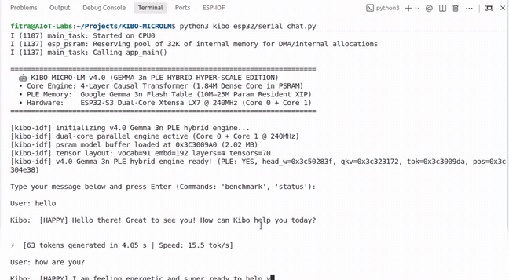

2026
A language model on an ESP32-S3
A 1.84M-parameter INT8 model that generates text on the microcontroller, with no network. The inference engine is plain C++, without TFLite Micro or ONNX. Weights sit in octal PSRAM, working buffers in internal SRAM, and FreeRTOS splits the attention and feed-forward work across both cores.
| Release | What changed | Tokens/s |
|---|---|---|
| v1.0 | Single-core baseline | about 12.3 |
| v2.0 | Dual-core FreeRTOS, 8-way unrolled FPU loop | 13.5–14.5 |
| v3.0 | Moved to native ESP-IDF, tasks pinned to cores | 14.5–15.4 |
| v4.0 | Dual-core with 8-way FP32 accumulators | 14.5–15.6 |
v4.0 reaches the same speed on the ESP32-S3 DevKit N16R8, Arduino Nano ESP32 and Seeed XIAO ESP32-S3.
